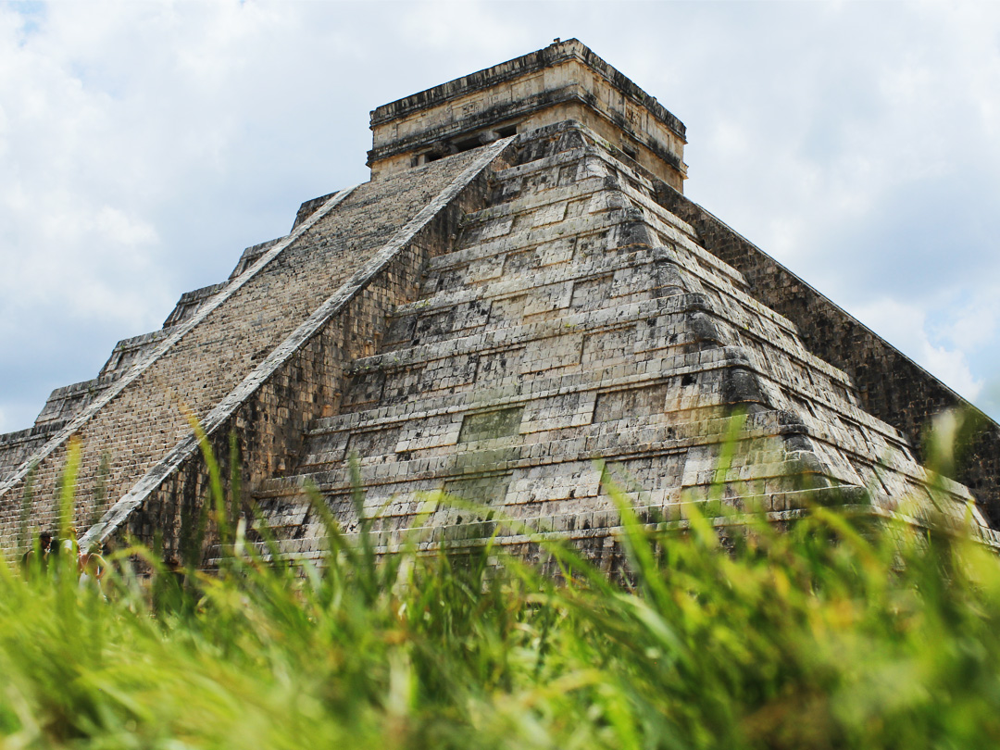
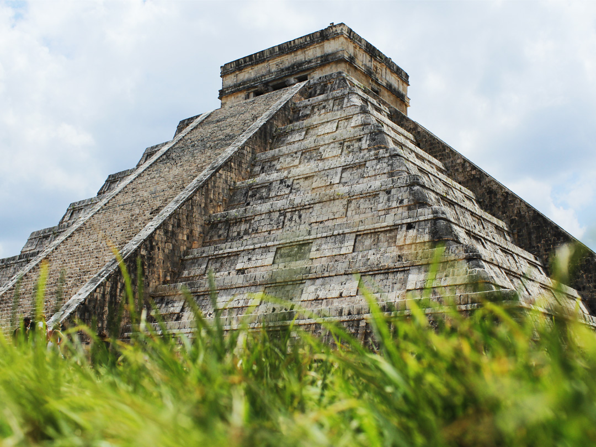
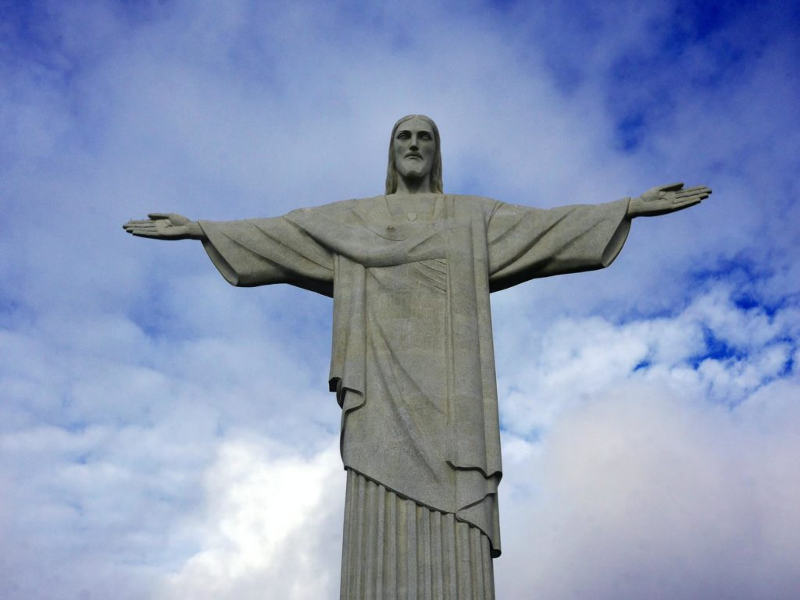
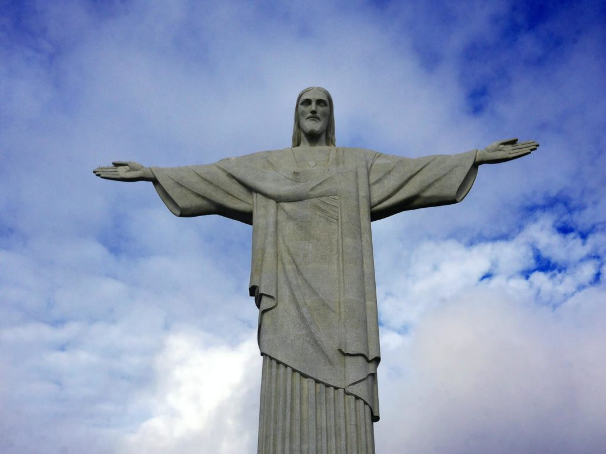
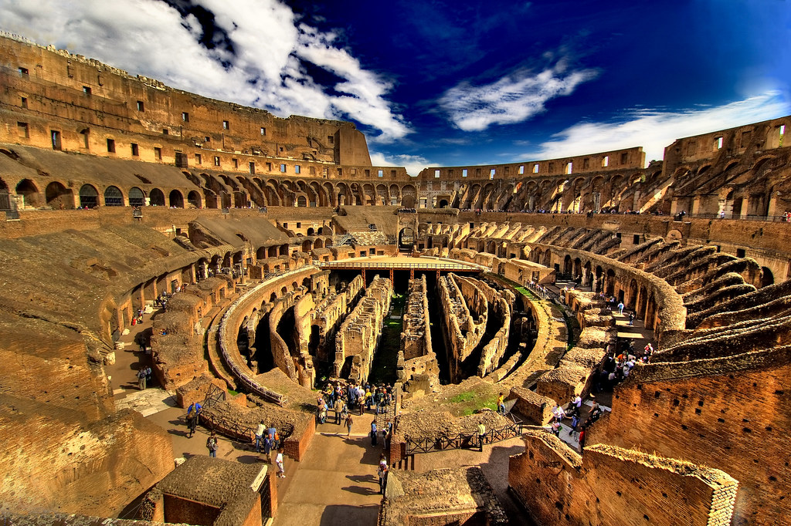
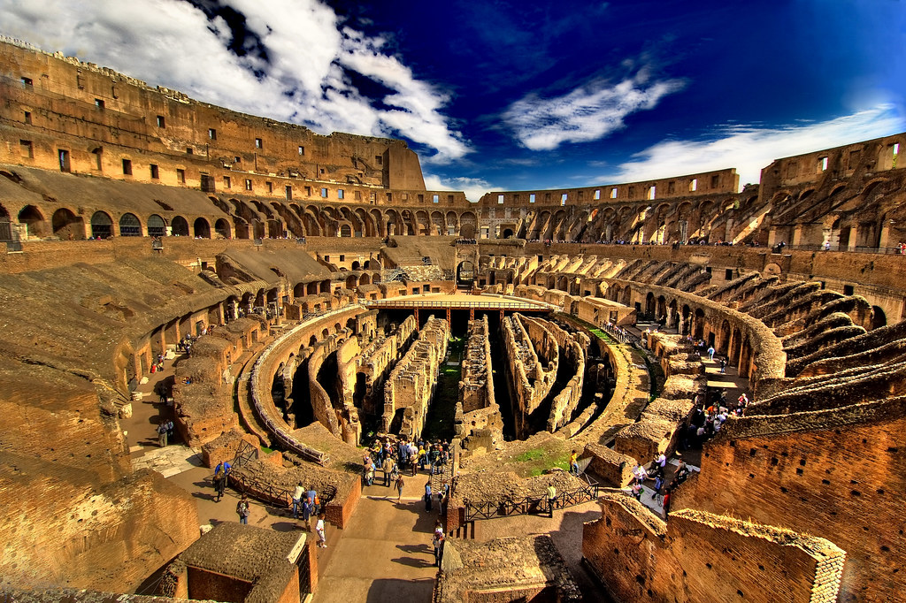
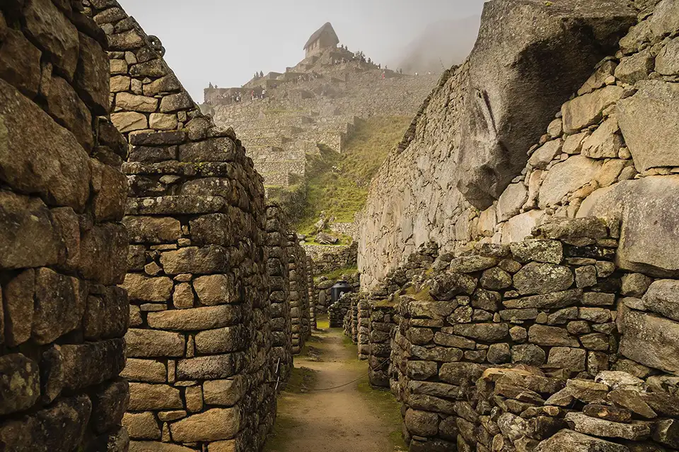
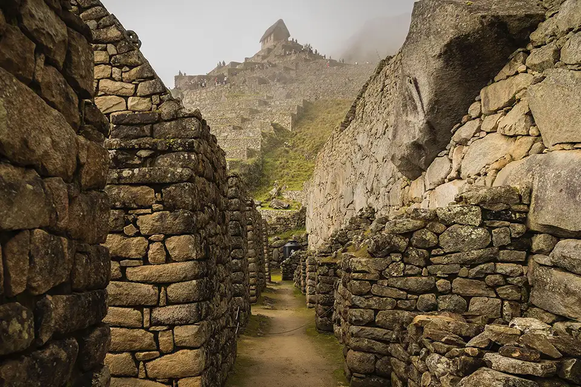
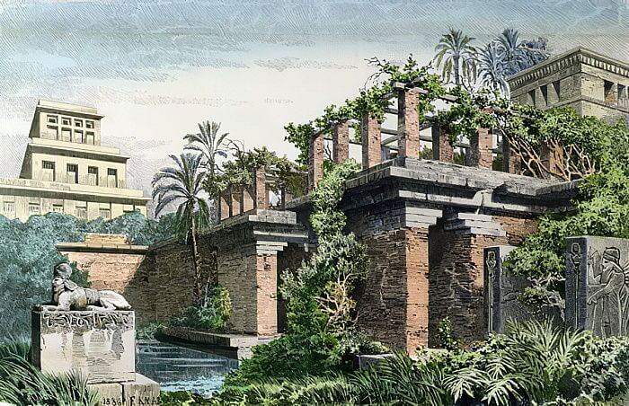
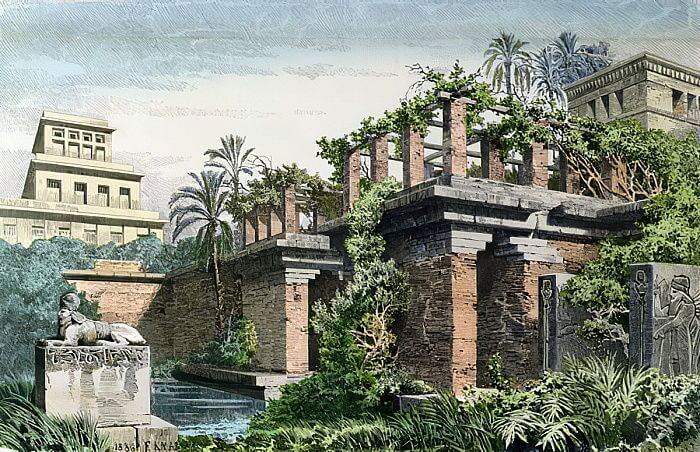

Chichén Itzá, México
 

Chichén Itzá es un sitio arqueológico icónico ubicado en la península de Yucatán, en México. Es uno de los destinos más populares para los amantes de la historia y la cultura, y es considerado una de las Nuevas Maravillas del Mundo. Aquí tienes información sobre Chichén Itzá junto con algunos consejos para los viajeros.
Consejo: ¿Viajas a México? Necesitarás una eSim. Con las tarjetas SIM de Holafly, tendrás internet ilimitado desde que llegues, sin tarifas sorpresa ni complicaciones. ¡Mantente conectado en todo momento! Pídela antes de viajar.
Historia: Chichén Itzá fue una ciudad maya que alcanzó su apogeo entre los siglos VII y X d.C. Es famosa por su arquitectura impresionante, incluida la pirámide de Kukulcán, que sirvió como templo y calendario astronómico.
Principales atracciones: Además de la pirámide de Kukulcán, puedes explorar el Templo de los Guerreros, el Cenote Sagrado (un cenote natural utilizado para rituales y sacrificios), y el observatorio El Caracol, que refleja el avanzado conocimiento astronómico de los mayas.
Mejor época para visitar: Mejor época para visitar: El clima en la península de Yucatán puede ser muy caluroso y húmedo. La mejor época para visitar es durante la temporada seca, de noviembre a abril, para evitar las lluvias y el calor extremo.
Ropa y calzado apropiados: Lleva ropa y calzado cómodos para caminar y estar preparado para cambios de temperatura, ya que la muralla se extiende por diferentes regiones.
Evita las multitudes: Chichén Itzá tiende a estar llena de turistas, especialmente al mediodía. Intenta llegar temprano por la mañana o al final de la tarde para evitar las aglomeraciones.
Hidratación y protección solar: Lleva suficiente agua, protector solar y un sombrero, ya que el sol puede ser muy intenso.
Guías locales: Considera contratar a un guía local para obtener una perspectiva más profunda de la historia y la cultura maya, así como detalles sobre la arquitectura y las inscripciones en el sitio.
Respeto por el patrimonio: No toques ni dañes las estructuras arqueológicas, y respeta las reglas del sitio para preservar su belleza y autenticidad.
Alrededores: Aprovecha la oportunidad para explorar las cercanías, como el pueblo de Valladolid y los cenotes cercanos.
Chichén Itzá es una ventana al pasado fascinante de la civilización maya y una visita obligada para cualquier viajero interesado en la historia y la cultura de América Latina. Planifica tu visita con cuidado y estarás listo para disfrutar de este sitio arqueológico impresionante.


 

 

 

 
